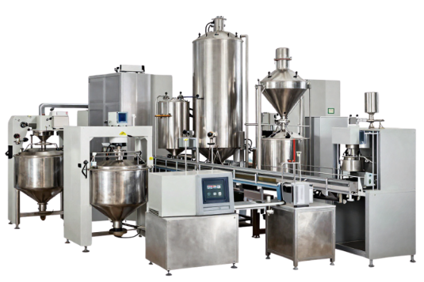

Berikut adalah cara mempresentasikan gambar asli Anda menggunakan trik pencahayaan khusus (Smart Multiply Blending).
Gambar mesin Anda yang sesungguhnya! Tidak ada lagi tepian kasar yang dipotong AI, dan tidak ada lagi kotak putih yang kaku. Gambar menyatu sempurna layaknya sulap berkat trik CSS tingkat lanjut.
